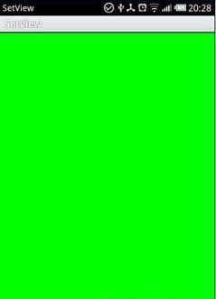

Android OpenGL基础实例（一）
设定视图
import javax.microedition.khronos.egl.EGLConfig;import javax.microedition.khronos.opengles.GL10;
import Android.app.Activity;
import Android.opengl.GLSurfaceView;
import Android.opengl.GLU;
import Android.os.Bundle;
public class SetView extends Activity implements GLSurfaceView.Renderer {
/** Called when the activity is first created. */
@Override
public void onCreate(Bundle savedInstanceState) {
super.onCreate(savedInstanceState);
GLSurfaceView myView = new GLSurfaceView(this);
myView.setRenderer(this);
setContentView(myView);
}
public void onDrawFrame(GL10 gl) {
gl.glClear(GL10.GL_COLOR_BUFFER_BIT | GL10.GL_DEPTH_BUFFER_BIT);
// 设定背景颜色 此处为绿
gl.glClearColor(0.0f, 1.0f, 0.0f, 0.0f);
// 重设视图模型变换 ， 用于观测创建的物体
gl.glLoadIdentity();
gl.glTranslatef(0.0f, 0.0f, -5.0f);
}
public void onSurfaceChanged(GL10 gl, int width, int height) {
// 设置坐标系
gl.glViewport(0, 0, width, height);
// 设置投影变换
gl.glMatrixMode(GL10.GL_PROJECTION);
gl.glLoadIdentity();
// Calculate The Aspect Ratio Of The Window
GLU.gluPerspective(gl, 0f, (float) width / (float) height, 0.1f, 100.0f);
gl.glMatrixMode(GL10.GL_MODELVIEW);
// 设定模型视图矩阵
gl.glLoadIdentity();
}
public void onSurfaceCreated(GL10 gl, EGLConfig config) {
// 第一次创建也会调用onSurfaceChanged函数、
}
}
